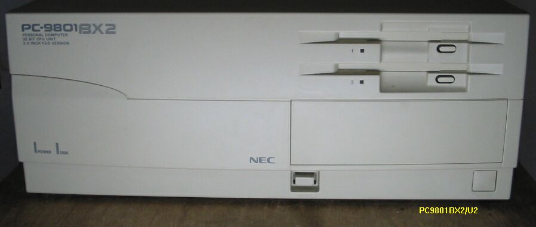

最貧のWindows95
このPC9801BX2はロジックボードだけの、バラックセットで、富士通のFM-Rのシャシーにのって、9801BX用の電源で動いており、部品のチェック用に時々使います。CPUは486SX25MHz、IDEコネクタ2個、72pinSIMMスロット2個がついています。SIMMスロットのうち1個は、最大4MBまでしか認識できないので、もう1個の方に32MBを取り付けると、36MBまで可能です。Windows95実用の最低限は、486DX2の50MHz、メモリー16MB位と言われており、私も以前486SXで、メモリー12MBのノートパソコンで、Windows95を動かしていたことがありましたが、実用というには、少し無理があったと思います。このマシンでは、他のマシンのために、Windows95のインストール実験を行っていたのですが、メモリー8MB、HD容量80MB位が動作の下限のようです。386マシンでも動作するようなので、いつか実験してみたいと思います。
386で本当に動くか？
386マシンへのインストールですが、ただ単にインストールしようとすると、 Windows95のインストーラが、486以上のCPUが必要ですといって、止まってしまいます。これを、どうやって乗り越えるかが課題ですね。
PC9801DAで動かす
PC9801DAでWindows95を動かすことができました。12MBの増設メモリと、CバスSCSIボードLHA301 SCSIHDはDNS-540、500MBを使用し、あらかじめPC9821Xsでインストール済みのシステムを、そっくり
SCSIHDに小ぴします。それを、9801DXにつなぎます。そのままでは、Windows95の起動中に止まって しまいますので、”起動しています”のメッセージが出たところで、ファンクションキーＦ８を押しますと、起動メニューが出てきて、起動モードを洗濯できます。とりあえず、safeモードで立ち上げ、
様子を見ます。後は、少しずつ、ドライバーを組み込んでゆけばよいと思いますが、実用になる速度で は動きませんので、386でもWindows95は動く、ということが分かっただけで、終わりにします。
（２００２年１月１７日記載）
PC9801BX2

その後完全なPC9801BX2を入手しました。
PC9801のページに戻る